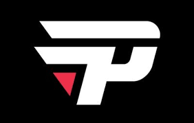

|
Pain Gaming (normalmente redigido como paiN Gaming)
é uma equipe brasileira de esportes eletrônicos, fundada em 2010 como time de DotA por Arthur "PAADA" Zarzur, ex-jogador profissional do game.Atualmente, a organização possui equipes que disputam Free Fire, League of Legends, Rainbow Six Siege, Counter-Strike: Global Offensive, bem como é representada por jogadores de Hearthstone[4] e Clash Royale. Além do Dota, a paiN já foi campeã brasileira de Smite e também no League of Legends, três vezes. Em 2017, a paiN Gaming anunciou seu retorno oficial ao Dota 2, voltando a suas origens. A equipe é uma das mais tradicionais nos esportes eletrônicos do Brasil. |